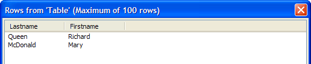

Using Arguments in SELECT Statements
What is an Argument?
An argument is a value that is interpreted at run-time and inserted into a SQL statement. You use the SQL::Arguments? object to pass one or more arguments to AlphaDAO. A SQL statement may use any number of arguments. An argument may be of any of the following data types.
"B" = blob
"C" = character
"D" = date
"L" = logical
"N" = numeric
"T" = time
"Y" = short time
Open the Code Editor and create a new script with the following content. This script prompts for a city value, then displays the records that contain that value in the bill_city field of the AlphaSports customer table.
|
dim conn as SQL::Connection dim sql as C dim vCity as C dim args as SQL::Arguments vCity = ui_get_text("City", "Show Companies in what city?") sql = "select lastname, firstname from customer where bill_city = :city Order By Company" if .not. conn.open("{A5API=Access,FileName='C:\Program Files\a5v8\MDBFiles\Alphasports.mdb', UserName='Admin'}") ui_msg_box("Error", conn.CallResult.text) end end if if .not. args.Set("city", vCity) end end if if .not. conn.execute(sql, args) ui_msg_box("Error", conn.CallResult.text) end end if sql_resultset_preview(conn.resultset) |
You use an argument by preceding its name with a colon (:), as in :city.
|
... where bill_city = :city ... |
You create an argument in a two step process. First, you create the SQL::Arguments object. Then you add elements to it with the .Set(?) or .Add(?) methods.
|
dim args as SQL::Arguments if .not. args.Set("city", vCity) end end if |
Note the way the script tests the return value of many of the methods, and ends when a failure occurs. Because most of these AlphaDAO methods return .T. (TRUE) for success, this is a good way of terminating a script that is not working.
|
if .not. conn.execute(sql, args) end end if |
A more complete application would add some error handling. At a minimum, you might display an error message before exiting.
|
if .not. conn.execute(sql, args) ui_msg_box("Error", conn.CallResult.text) end end if |
If you run this script and enter "Boston", you will see: Picture
{kind=link}

Limitations
See Also
Working with SQL Databases, SQL::Arguments Object?